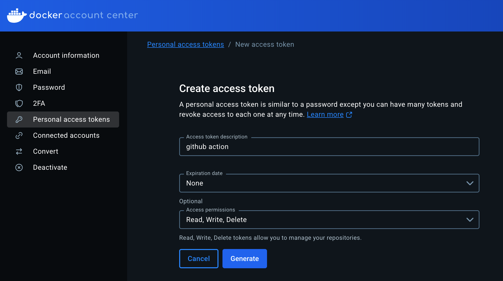
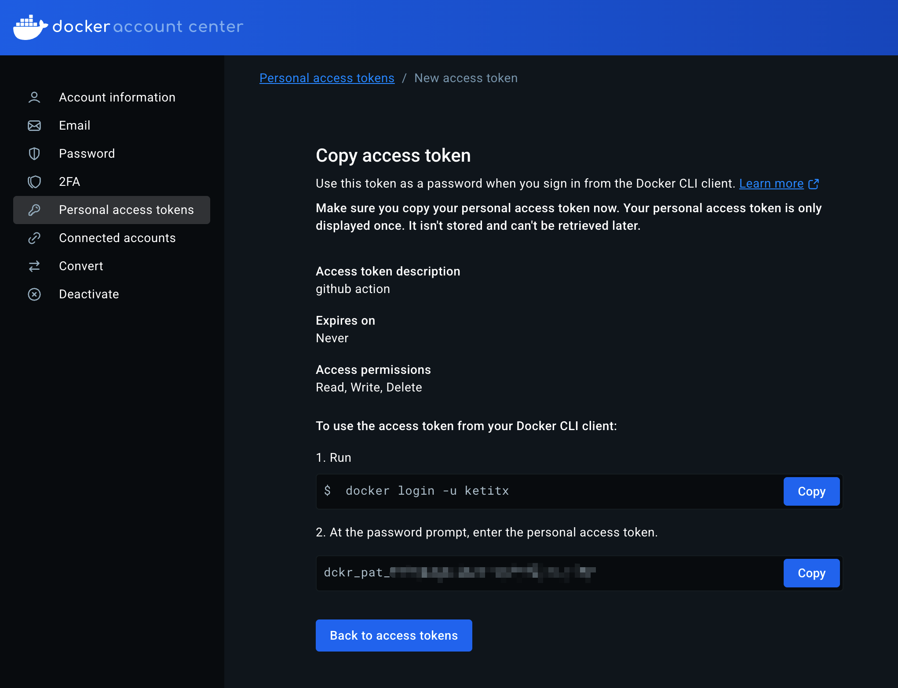
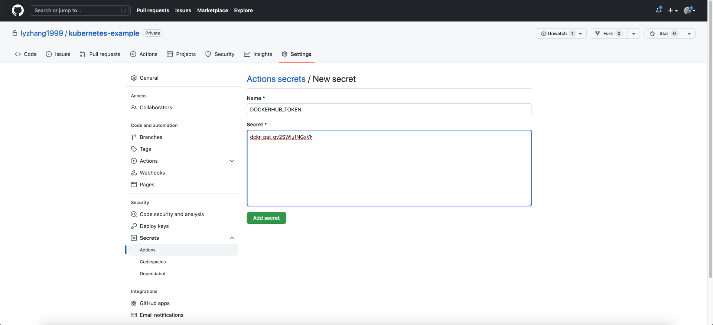
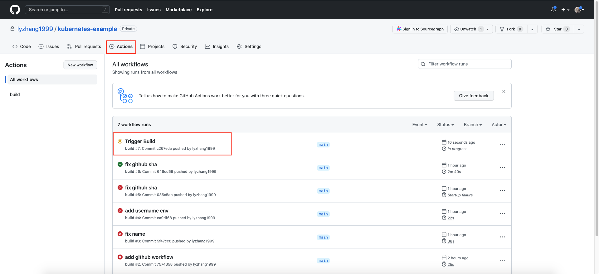
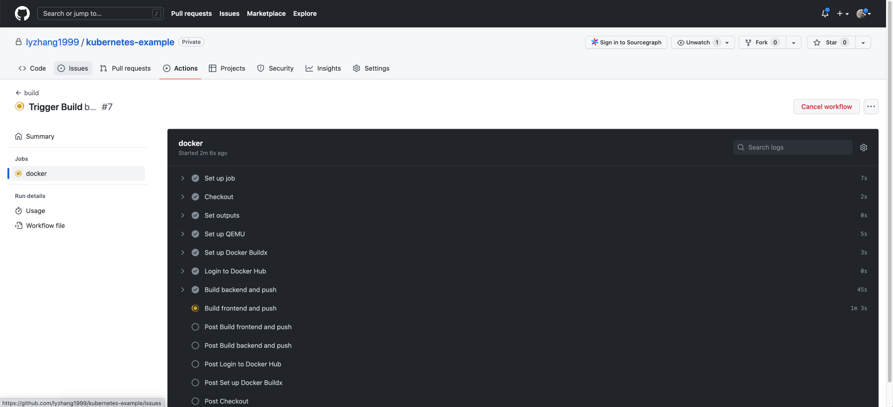
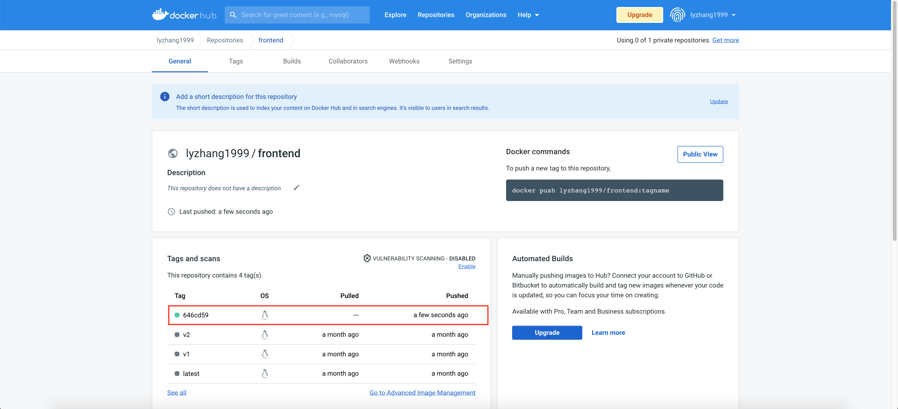

GitHubAction
使用GitHubAction构建镜像
什么是 GitHub Action？
在正式使用 GitHub Action 自动构建镜像之前，你需要先了解一些基本概念，我们直入主题，重点介绍这节课会涉及的概念和用法。
几个基本概念：Workflow、Event、Job 和 Step。
Workflow
Workflow 也叫做工作流。其实，GitHub Action 本质上是一个是一个 CI/CD 工作流，要使用工作流，我们首先需要先定义它。和 K8s Manifest 一样，GitHub Action 工作流是通过 YAML 来描述的，你可以在任何 GitHub 仓库创建 .github/workflows 目录，并创建 YAML 文件来定义工作流。
所有在 .github/workflows 目录创建的工作流文件，都将被 GitHub 自动扫描。在工作流中，通常我们会进一步定义 Event、Job 和 Step 字段，它们被用来定义工作流的触发时机和具体行为。
Event
Event 从字面上的理解是“事件”的意思，你可以简单地把它理解为定义了“什么时候运行工作流”，也就是工作流的触发器。
在定义自动化构建镜像的工作流时，我们通常会把 Event 的触发器配置成“当指定分支有新的提交时，自动触发镜像构建”。
Jobs
Jobs 的字面意思是一个具体的任务，它是一个抽象概念。在工作流中，它并不能直接工作，而是需要通过 Step 来定义具体的行为。此外，你还可以为 Job 定义它的运行的环境，例如 ubuntu。
在一个 Workflow 当中，你可以定义多个 Job，多个 Job 之间可以并行运行，也可以定义相互依赖关系。在自动构建镜像环节，通常我们只需要定义一个 Job 就够了，所以在上面的示意图中，我只画出了一个 Job。
Step
Step 隶属于 Jobs，它是工作流中最小的粒度，也是最重要的部分。通常来说，Step 的具体行为是执行一段 Shell 来完成一个功能。在同一个 Job 里，一般我们需要定义多个 Step 才能完成一个完整的 Job，由于它们是在同一个环境下运行的，所以当它们运行时，就等同于在同一台设备上执行一段 Shell。
以自动构建镜像为例，我们可能需要在 1 个 Job 中定义 3 个 Step。
- Step1，克隆仓库的源码。
- Step2，运行 docker build 来构建镜像。
- Step3，推送到镜像仓库。
费用
GitHub Action 在使用上虽然很方便，但天下并没有免费的午餐。对于 GitHub 免费账户，每个月有 2000 分钟的 GitHub Action 时长可供使用（Linux 环境），超出时长则需要按量付费，你可以在 这里 查看详细的计费策略。
示例
name: build
on:
push:
branches:
- 'main'
env:
DOCKERHUB_USERNAME: ketitongxue
jobs:
docker:
runs-on: ubuntu-latest
steps:
- name: Checkout
uses: actions/checkout@v3
- name: Set outputs
id: vars
run: echo "::set-output name=sha_short::$(git rev-parse --short HEAD)"
- name: Set up QEMU
uses: docker/setup-qemu-action@v2
- name: Set up Docker Buildx
uses: docker/setup-buildx-action@v2
- name: Login to Docker Hub
uses: docker/login-action@v2
with:
username: ${{ env.DOCKERHUB_USERNAME }}
password: ${{ secrets.DOCKERHUB_TOKEN }}
- name: Build backend and push
uses: docker/build-push-action@v3
with:
context: backend
push: true
tags: ${{ env.DOCKERHUB_USERNAME }}/backend:${{ steps.vars.outputs.sha_short }}
- name: Build frontend and push
uses: docker/build-push-action@v3
with:
context: frontend
push: true
tags: ${{ env.DOCKERHUB_USERNAME }}/frontend:${{ steps.vars.outputs.sha_short }}
name 字段是工作流的名称，它会展示在 GitHub 网页上。
on.push.branches 字段的值为 main，这代表当 main 分支有新的提交之后，会触发工作流。
env.DOCKERHUB\_USERNAME 是我们为 Job 配置的全局环境变量，用作镜像 Tag 的前缀。
jobs.docker 字段定义了一个任务，它的运行环境是 ubuntu-latest，并且由 7 个 Step 组成。
jobs.docker.steps 字段定义了 7 个具体的执行阶段。要特别注意的是，uses 字段代表使用 GitHub Action 的某个插件，例如 actions/checkout@v3 插件会帮助我们检出代码。
在这个工作流中，这 7 个阶段会具体执行下面几件事。
- “Checkout”阶段负责将代码检出到运行环境。
- “Set outputs”阶段会输出 sha\_short 环境变量，值为 short commit id，这可以方便在后续阶段引用。
- “Set up QEMU”和“Set up Docker Buildx”阶段负责初始化 Docker 构建工具链。
- “Login to Docker Hub”阶段通过 docker login 来登录到 Docker Hub，以便获得推送镜像的权限。要注意的是，with 字段是向插件传递参数的，在这里我们传递了 username 和 password，值的来源分别是我们定义的环境变量 DOCKERHUB\_USERNAME 和 GitHub Action Secret，后者我们还会在稍后进行配置。
- “Build backend and push”和“Build frontend and push”阶段负责构建前后端镜像，并且将镜像推送到 Docker Hub，在这个阶段中，我们传递了 context、push 和 tags 参数，context 和 tags 实际上就是 docker build 的参数。在 tags 参数中，我们通过表达式
${{ env.DOCKERHUB_USERNAME }}和${{ steps.vars.outputs.sha_short }}分别读取了 在 YAML 中预定义的 Docker Hub 的用户名，以及在“Set outputs”阶段输出的 short commit id。
创建 GitHub 仓库并推送
创建完 build.yaml 文件后，接下来，我们要把示例应用推送到 GitHub 上。首先，你需要通过 这个页面 来为自己创建新的代码仓库，仓库名设置为 kubernetes-example。
创建完成后，将刚才克隆的 kubernetes-example 仓库的 remote url 配置为你刚才创建仓库的 Git 地址。
$ git remote set-url origin YOUR_GIT_URL
然后，将 kubernetes-example 推送到你的仓库。在这之前，你可能还需要配置 SSH Key，你可以参考 这个链接 来配置，这里就不再赘述了。
$ git add .
$ git commit -a -m 'first commit'
$ git branch -M main
$ git push -u origin main
创建 Docker Hub Secret
创建完 build.yaml 文件后，接下来，我们需要创建 Docker Hub Secret，它将会为工作流提供推送镜像的权限。
首先，使用你注册的账号密码登录 https://hub.docker.com/。然后，点击右上角的“用户名”，选择“Account Settings”，并进入左侧的“Personal access tokens”菜单。
下一步点击右侧的“Generate new token”按钮，创建一个新的 Token。
输入描述，然后点击“Genarate”按钮生成 Token。

点击“Copy and Close”将 Token 复制到剪贴板。 请注意，当窗口关闭后，Token 无法再次查看，所以请在其他地方先保存刚才生成的 Token。

创建 GitHub Action Secret
创建完 Docker Hub Token 之后，接下来我们就可以创建 GitHub Action Secret 了，也就是说我们要为 Workflow 提供 secrets.DOCKERHUB\_TOKEN 变量值。
进入 kubernetes-example 仓库的 Settings 页面，点击左侧的“Secrets”，进入“Actions”菜单，然后点击右侧“New repository secret”创建新的 Secret。

在 Name 输入框中输入 DOCKERHUB\_TOKEN，这样在 GitHub Action 的 Step 中， **就可以通过 ${{ secrets.DOCKERHUB\_TOKEN }} 表达式来获取它的值**。
在 Secret 输入框中输入刚才我们复制的 Docker Hub Token，点击“Add secret”创建。
触发 GitHub Action Workflow
到这里，准备工作已经全部完成了，接下来我们尝试触发 GitHub Action 工作流。还记得我们在工作流配置的 on.push.branches 字段吗？它的值为 main，代表当有新的提交到 main 分支时触发工作流。
首先，我们向仓库提交一个空 commit。
$ git commit --allow-empty -m "Trigger Build"
然后，使用 git push 来推送到仓库， **这将触发工作流**。
$ git push origin main
接下来，进入 kubernetes-example 仓库的“Actions”页面，你将看到我们刚才触发的工作流。

你可以点击工作流的标题进入工作流详情页面。

在工作流的详情页面，我们能看到工作流的每一个 Step 的状态及其运行时输出的日志。
当工作流运行完成后，进入到 Docker Hub frontend 或者 backend 镜像的详情页，你将看到刚才 GitHub Action 自动构建并推送的新版本镜像。

到这里，我们便完成了使用 GitHub Action 自动构建镜像的全过程。最终实现效果是，当我们向 main 分支提交代码时，GitHub 工作流将自动构建 frontend 和 backend 镜像， 并且每一个 commit id 对应一个镜像版本。